Mi hijo llegó a mitad de año sin conocer a nadie. A la segunda semana ya me pedía quedarse al horario extendido.
Preescolar y Primaria con grupos pequeños, inglés todos los días y maestras que conocen a cada alumno por su nombre.
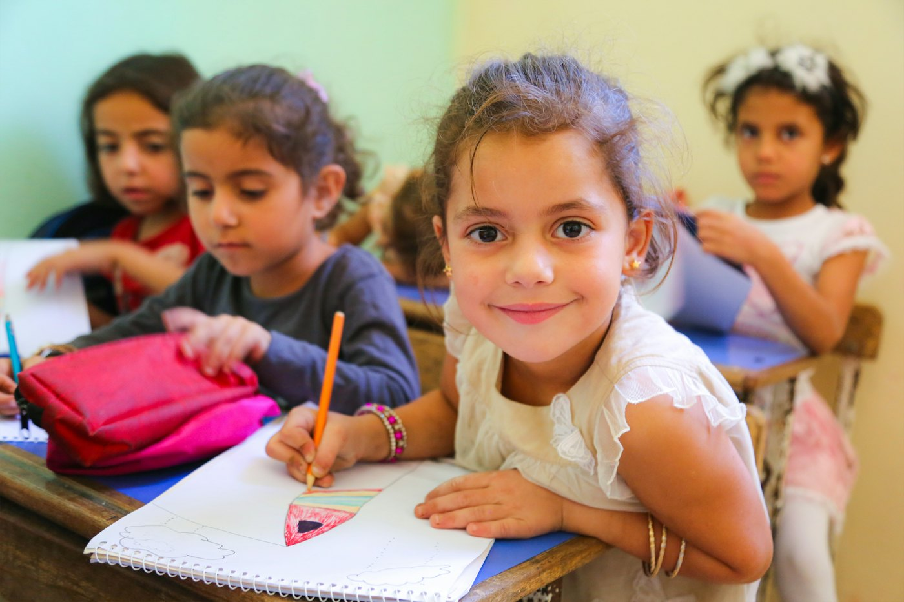
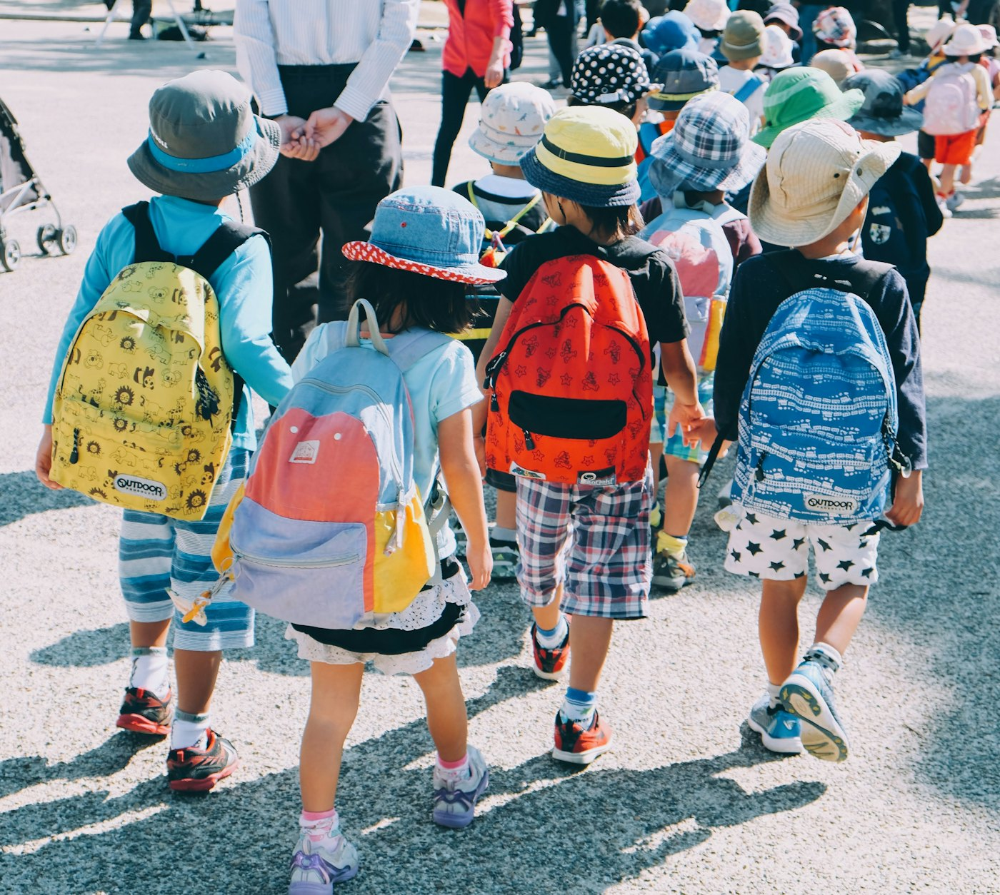
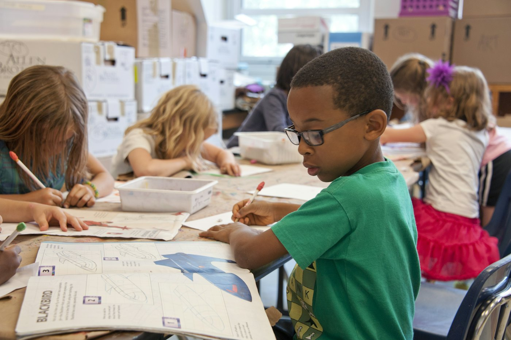
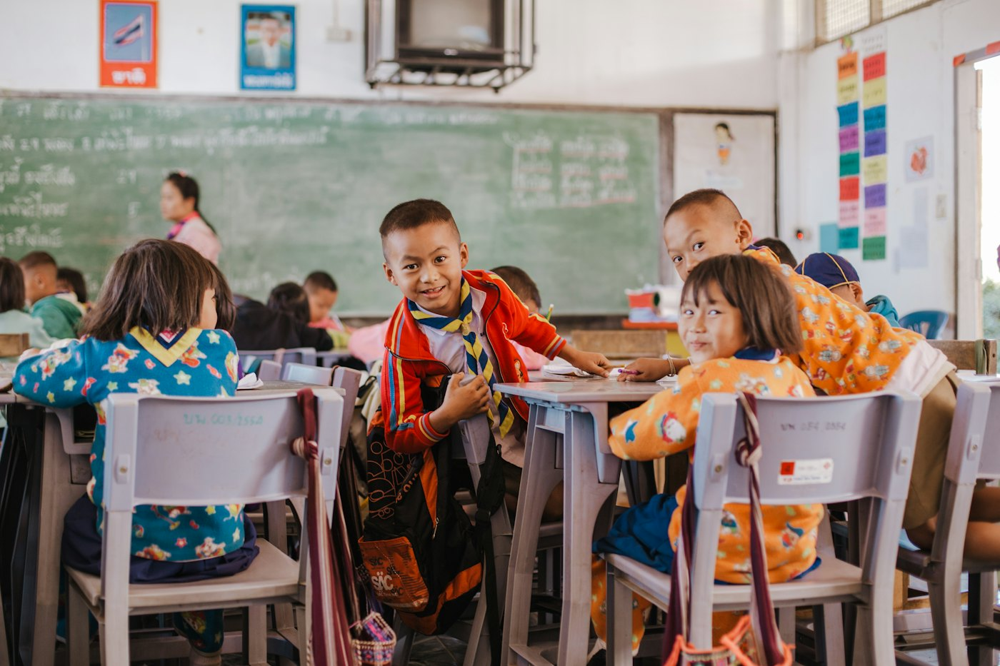
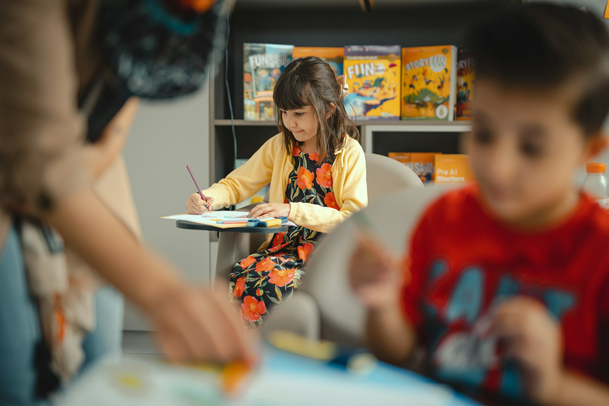
Lo que preguntan primero las familias
Fotos tomadas en un martes cualquiera. Así se ve el colegio cuando nadie está posando.
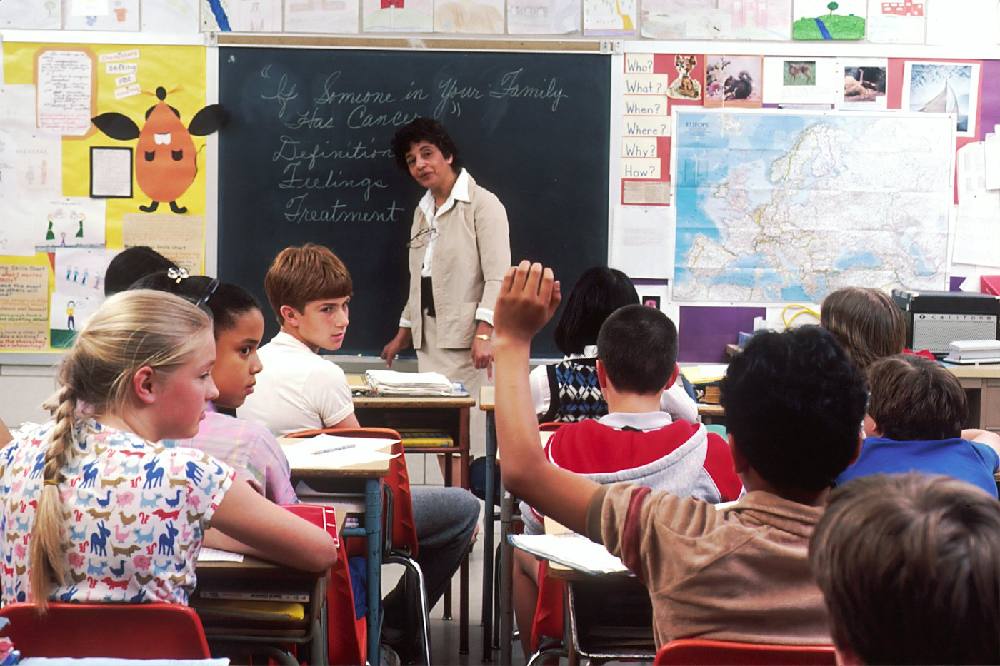
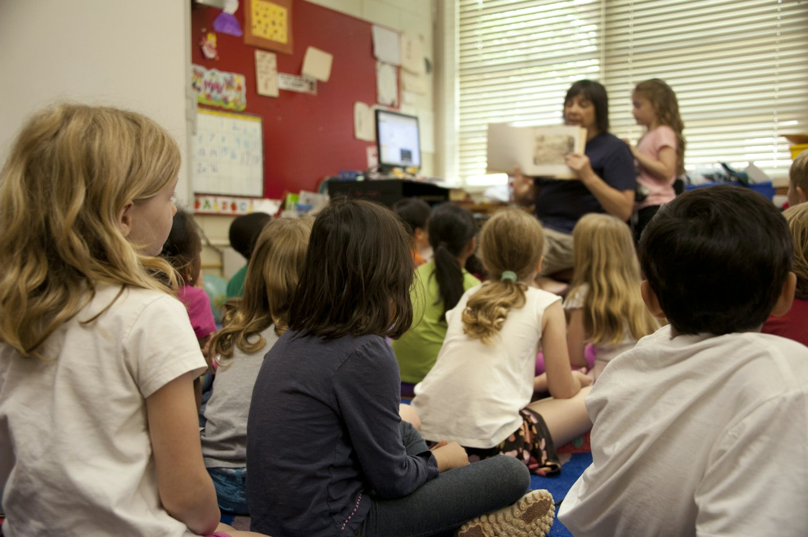
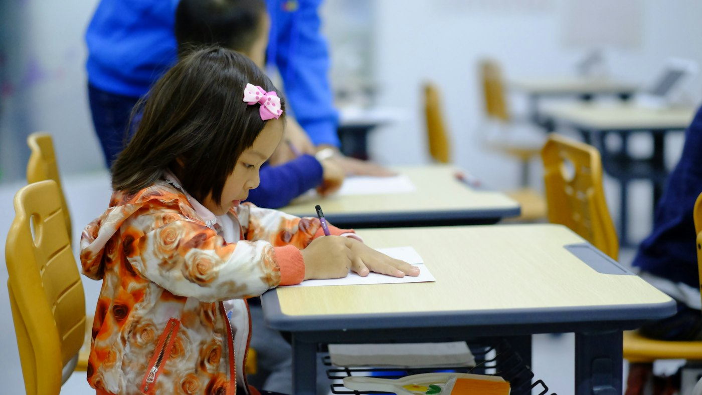
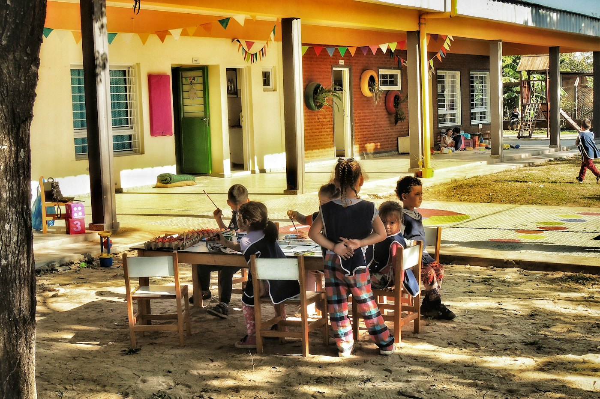
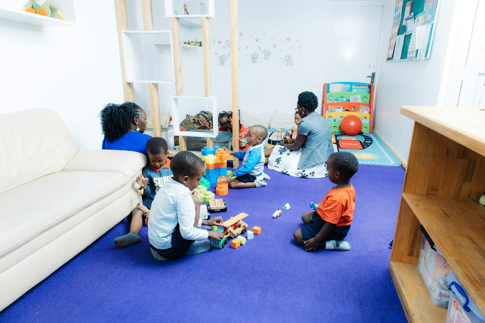
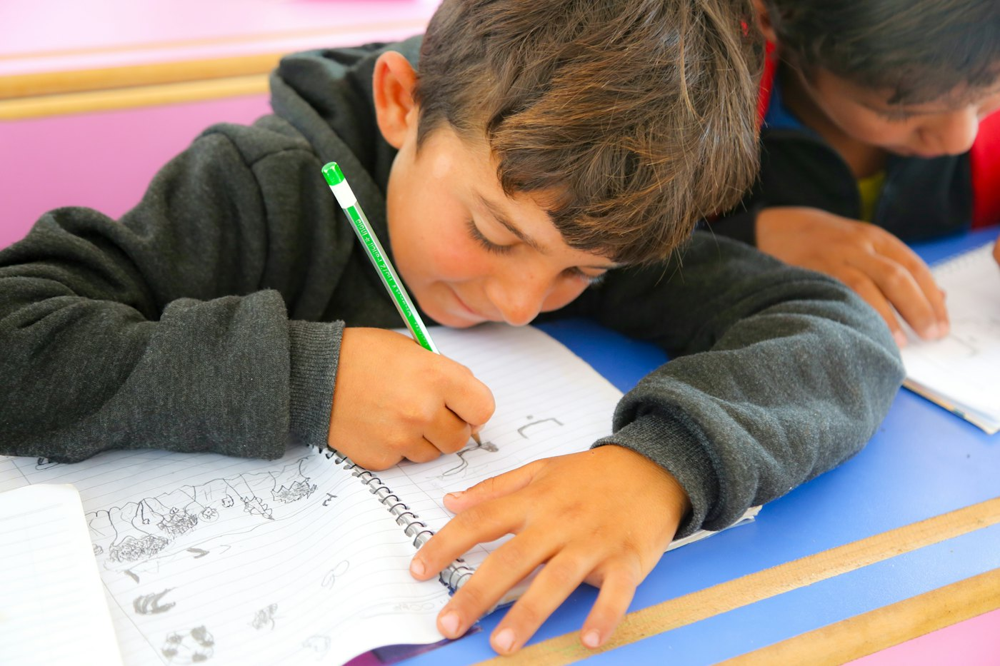
Mi hijo llegó a mitad de año sin conocer a nadie. A la segunda semana ya me pedía quedarse al horario extendido.
Lo que más valoro es que la maestra me manda un mensaje cuando algo no va bien, no espera a la junta de calificaciones.
Venimos de un colegio con 35 niños por salón. Aquí son 18 y se nota en cómo lee mi hija.
Las salidas al museo y al mercado hacen que llegue a casa contando cosas, no solo tareas.
Entramos por el inglés y nos quedamos por el trato. Conocen a mis dos hijos por nombre desde el primer día.
El horario extendido con comida nos resolvió la vida a los dos que trabajamos.
Recorren los salones, conocen a las maestras y participan en una clase de 40 minutos mientras tú platicas con dirección.
Apartar lugar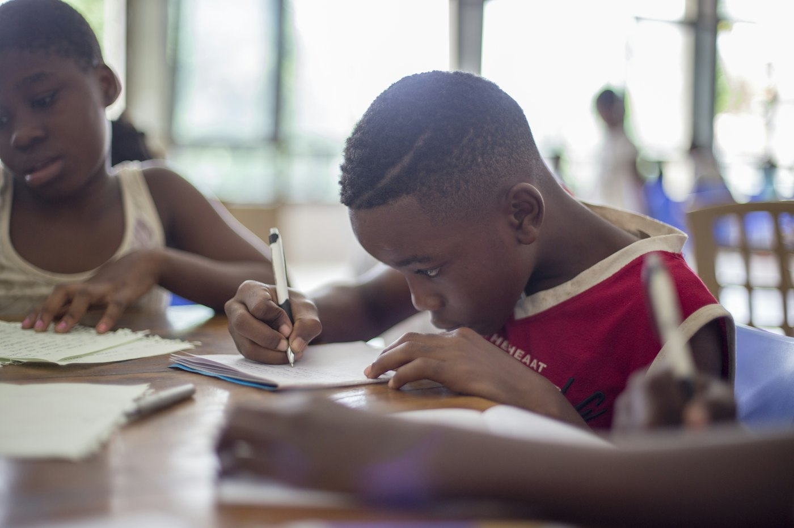